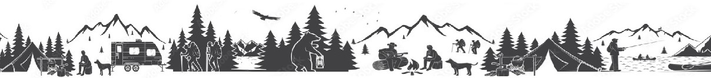

現代忙碌的社會中，人們總是需要一個能遠離塵囂的心靈放鬆之旅
而「露營」正是您最佳的選擇！
因此我們規劃了一系列服務~ 希望能幫助大家找到心中理想的露營地⛺
⛺各分頁介紹
⛺各分頁使用說明
為您規劃四個步驟，一一帶您探索露營的樂趣！
👉STEP1. 露營地查詢👈
如果您想知道全台合法的露營地相關知識（地理位置、該營地提供的設備、
附近最近的補給站.....等），「全台露營地地圖」將會是您最佳選擇！
地圖上有許多圖標 ，上面的顏色代表了該營地有提供哪些服務 （紅 ：
有提供遮雨棚、綠 ：有提供租借設備、藍 ：可玩水）；點擊後會顯示
此營地的詳細相關資料，以方便您決定選擇喜愛的露營地。
您也可以查看全台露營地地圖下方的小測驗回答露營相關問題， 答題完成
後系統會推薦一個符合您條件的露營地。

👉STEP3. 露營派對👈
我們還準備了有趣的小遊戲，作為露營行前的熱身活動！遊戲是以大富翁
的形式遊玩，過程中會涉及到 STEP2. 「知識補給站」的內容，以幫助大家
複習露營相關知識，寓教於樂。
